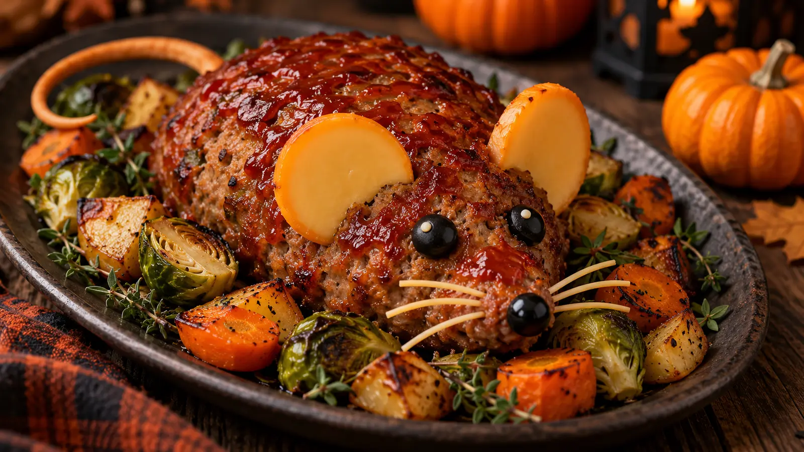
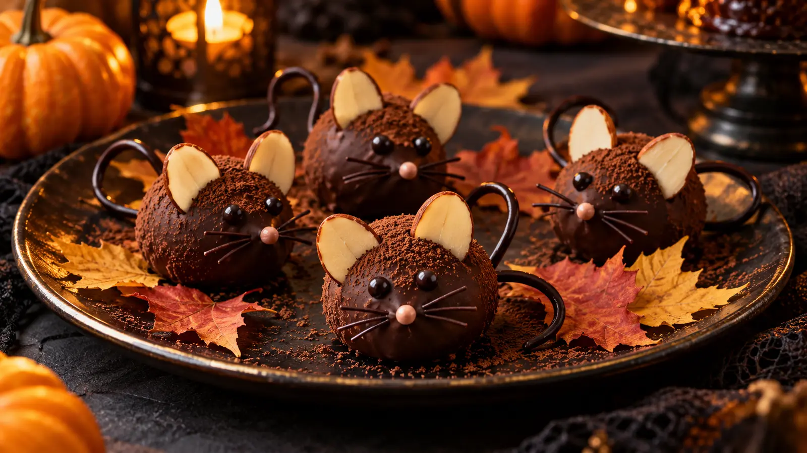
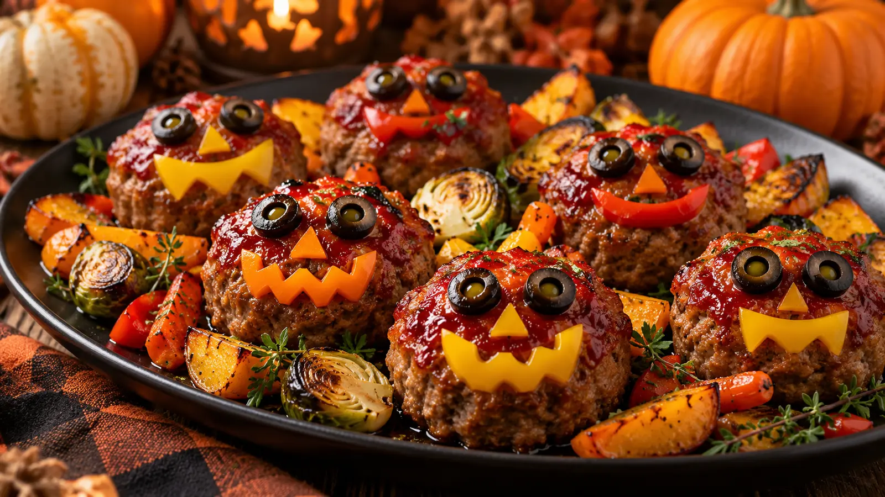
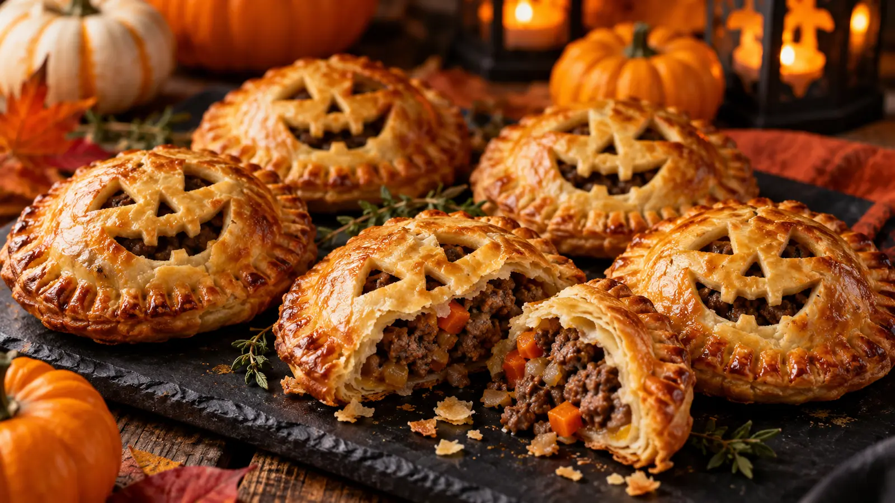
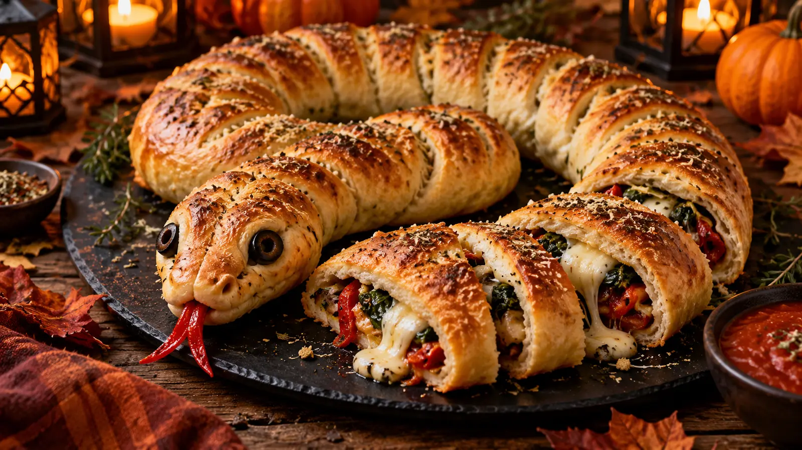
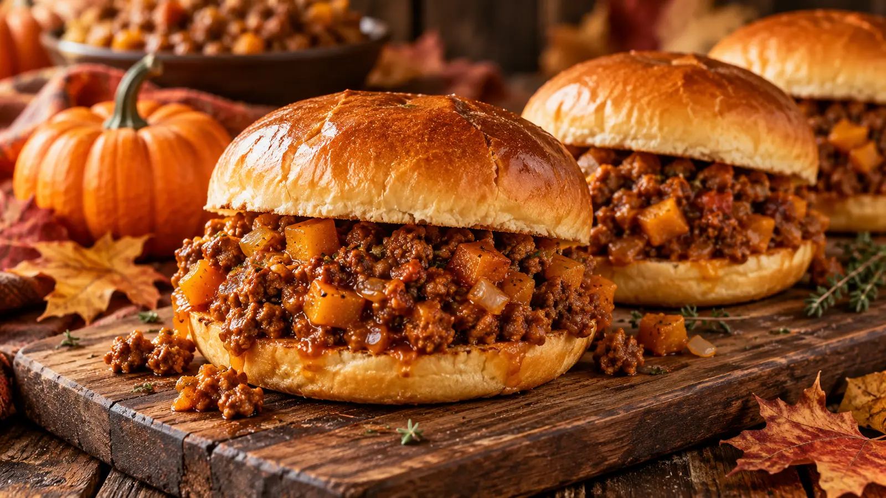

BITE-SPARKS STORIES
Short recipe stories
Visual, self-contained recipe guides with practical cooking cues and a link to each full recipe.

Monster Face Pie: A Halloween Dinner Story
A quick visual guide to building a crisp, golden Monster Face Pie with a rich beef-and-vegetable filling.

Pizza Skulls: A Halloween Snack Story
A quick visual guide to making crisp, cheese-filled Pizza Skulls for a Halloween snack table.

Mummy Pizza: A Halloween Dinner Story
A quick visual guide to making a crisp personal Mummy Pizza with mozzarella bandages and olive eyes.

Finger-Shaped Cheese Sticks: A Halloween Snack Story
A practical guide to crisp cheese pastry sticks with almond nails and a warm marinara dip.

Zombie Meatloaf: A Halloween Recipe Story
A short, practical visual guide to a tender glazed meatloaf with olive eyes and pepper hair, designed as a cheerful halloween centrepiece rather than a scary dish.

Monster Hand Ham and Cheese Board: A Halloween Recipe Story
A short, practical visual guide to an easy halloween grazing board that turns ham, cheese, crackers and fresh produce into a friendly monster-hand display.

Sausage Monster Charcuterie Board: A Halloween Recipe Story
A short, practical visual guide to a playful halloween charcuterie board with a sausage-and-cheese monster face, crisp crackers and fresh produce for contrast.

Wrapped Halloween Cheese Ball: A Halloween Recipe Story
A short, practical visual guide to a creamy herb cheese ball wrapped in cucumber ribbons for a fresh, playful halloween party centrepiece.

Edible Red Party Sauce: A Halloween Recipe Story
A short, practical visual guide to a bright berry dipping sauce with a glossy finish for fruit, cookies and halloween dessert boards.

Creepy Deviled Egg Eyeballs: A Halloween Recipe Story
A short, practical visual guide to classic deviled eggs dressed with olive pupils and fine pepper details for an easy halloween platter.

Spooky Baked Brie: A Halloween Recipe Story
A short, practical visual guide to warm baked brie topped with a pastry spiderweb and olive spider for a simple halloween starter.

Ratloaf Meatloaf: A Halloween Recipe Story
A short, practical visual guide to a savory mouse-shaped meatloaf with herb potatoes and roasted vegetables for a playful halloween supper.

Chocolate Mice: A Halloween Recipe Story
A short, practical visual guide to small chocolate truffle mice with almond ears and licorice tails for a gentle halloween dessert tray.

Black Bat Chicken Wings: A Halloween Recipe Story
A short, practical visual guide to crisp oven wings glazed with a dark balsamic barbecue sauce and served with a bat-themed garnish.

Mini Monster Meatloaf Bites: A Halloween Recipe Story
A short, practical visual guide to individual glazed meatloaf bites with vegetable faces, sized for a halloween buffet or family dinner.

Monster Cheese Ball: A Halloween Recipe Story
A short, practical visual guide to a bright herb-and-cheddar cheese ball decorated with vegetable eyes for a cheerful halloween snack table.

Jack-O-Lantern Stuffed Peppers: A Halloween Recipe Story
A short, practical visual guide to orange bell peppers carved with friendly faces and filled with seasoned rice, beans and cheese.

Witch Hat Dippers: A Halloween Recipe Story
A short, practical visual guide to crisp tortilla cones with seasoned cream-cheese filling, shaped as savory witch hats for dipping.

Jack-O-Lantern Beef Hand Pies: A Halloween Recipe Story
A short, practical visual guide to flaky individual beef pies with carved pumpkin-style pastry tops for a portable halloween meal.

Spooky Calzone Snake: A Halloween Recipe Story
A short, practical visual guide to a long mozzarella-and-pepperoni calzone coiled into a friendly snake for a halloween pizza night.

Octodogs: A Halloween Recipe Story
A short, practical visual guide to hot dog octopuses with crisp curled legs, served with a simple mustard and ketchup dip.

Hot Dog Mummies: A Halloween Recipe Story
A short, practical visual guide to tender hot dogs wrapped in golden pastry strips with tiny mustard eyes for a quick halloween tray.

Spider Hot Dogs: A Halloween Recipe Story
A short, practical visual guide to mini hot dog spiders with pretzel-stick legs, made for a quick kid-friendly halloween platter.

Mini Meatloaf Ghosts: A Halloween Recipe Story
A short, practical visual guide to tender individual meatloaves topped with piped potato ghosts for a warm halloween dinner.

Baked Mummy Jalapeño Poppers: A Halloween Recipe Story
A short, practical visual guide to cream-cheese jalapeño poppers wrapped in light pastry strips and baked until crisp.

Shrimp Cocktail Brain Dip: A Halloween Recipe Story
A short, practical visual guide to a chilled shrimp cocktail dip piped into a playful brain-like swirl for a halloween seafood starter.

Mummified Meatballs in Potato Skin Coffins: A Halloween Recipe Story
A short, practical visual guide to crisp potato-skin coffins holding saucy meatballs with cheese-strip mummy wraps.

Crescent Mummy Hot Dogs: A Halloween Recipe Story
A short, practical visual guide to bite-size crescent-wrapped hot dogs with a crisp flaky finish for halloween party snacking.

Pumpkin Sloppy Joes: A Halloween Recipe Story
A short, practical visual guide to savory ground-beef sandwiches enriched with pumpkin purée, tomato and warm spices for autumn.

Spider Deviled Eggs: A Halloween Recipe Story
A short, practical visual guide to creamy deviled eggs topped with olive spiders for a classic, protein-rich halloween appetizer.